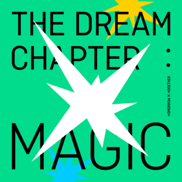

The Dream Chapter: Magic

The Dream Chapter: Magic is TXT's debut studio album, released on 21st October 2019. It contains eight songs with the title track "9 and Three Quarters (Run Away)"
Tracklist
- New Rules
- 9 and Three Quarters (Run Away)
- Roller Coaster
- Poppin' Star
- Can't We Just Leave the Monster Alive?
- Magic Island
- 20cm
- Angel or Devil
Achievemennts
- Win on The Show
- Peaked at 1st place in South Korean Albums Gaon Chart